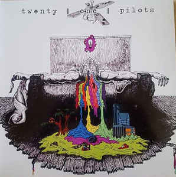
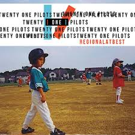
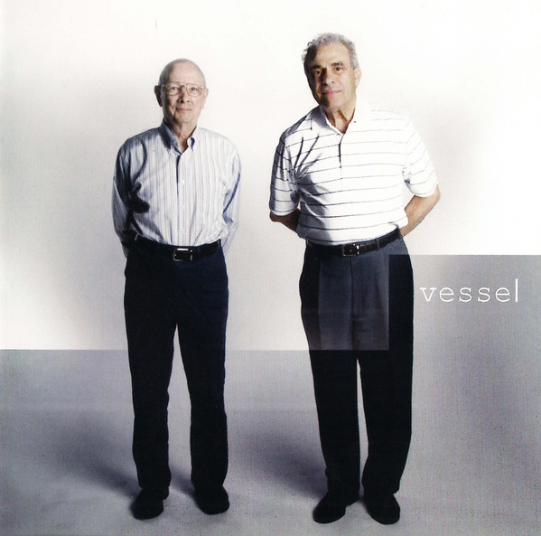
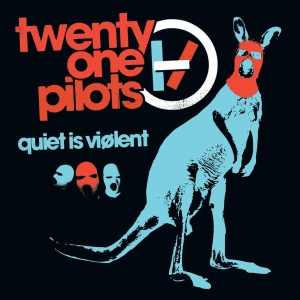
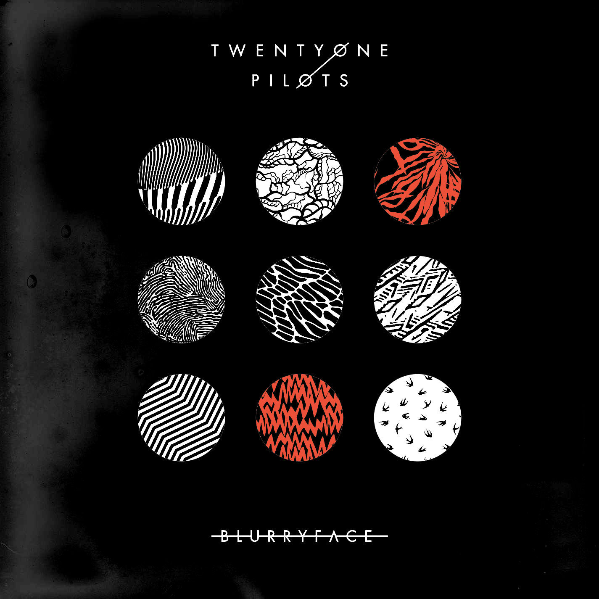
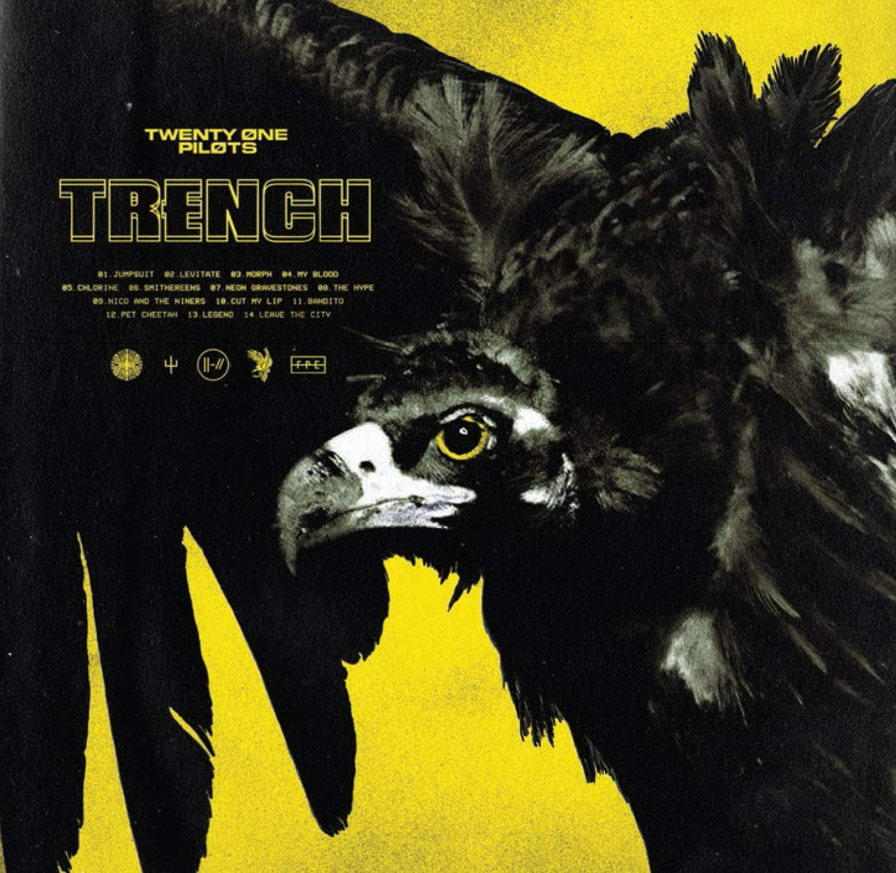

Twenty øne Piløts
Albuns
Album:  Twenty One Pilots 2009 Independente 14 faixas 01.Implicit Demand For Proof 02. Fall Away 03. The Pantaloon 04. Addict With a Pen 05. Friend, Please 06. March To The Sea 07. Johnny Boy 08. Oh, Ms Believer 09. Air Catcher 10. Trapdoor 11. A Car, a Torch, a Death 12. Taxi Cab 13. Before You Start Your Day 14. Isle of Flightless Birds
Album:  Regional at Best 2011 Independente # 13 faixas 01. Guns For Hands 02. Holding On To You 03. Ode To Sleep 04. Car Radio 05. Forest 06. Glowing Eyes 07. Kitchen Sink 08. Anathema 09. Lovely 10. Ruby 11. Trees 12. Be Concerned 13. Clear
Album:  Vessel 2013 Fueled By Ramen # 12 faixas 01. Ode To Sleep 02. Holding On To You 03. Migraine 04. House Of Gold 05. Car Radio 06. Semi-Automatic 07. Screen 08. The Run and Go 09. Fake You Out 10. Guns For Hands 11. Trees 12. Truce
Album: Migraine (EP) 2013 Fueled by Ramen # 5 faixas 01. Migraine 02. Forest 03. Ode To Sleep 04. Guns For Hands 05. Migraine (Live)
Album:  Quiet Is Viølent 2014 Fueled by Ramen # 6 faixas 01. Car Radio (live at the Newport Music Hall) 02. Holding On to You (Live at the Newport Music Hall) 03. Guns for Hands (Live from SXSW) 04. House of Gold (Denzel Park remix) 05. Car Radio [(Great Good Fine OK Remix) 06. Guns for Hands (Dzeko & Torres Remix)
Album:  Blurryface 2015 Fueled By Ramen # 14 faixas 01. Heavydirtysoul 02. Stressed Out 03. Ride 04. Fairly Local 05. Tear In My Heart 06. Lane Boy 07. The Judge 08. Doubt 09. Polarize 10. We Don't Believe What's On Tv 11. Message Man 12. Hometown 13. Not Today 14. Goner
Album:  Trench 2018 Fueled By Ramen # 14 faixas 01. Jumpsuit 02. Levitate 03. Morph 04. My Blood 05. Chlorine 06. Smithereens 07. Neon Gravestones 08. The Hype 09. Nico and The Niners 10. Cut My Lip 11. Bandito 12. Pet Cheetah 13. Legend 14. Leave The City
(informações retiradas de https://www.wikipedia.org/)